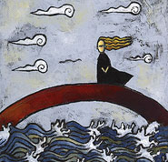

A Safe Place to Explore Questions About Life and God
A Safe Place to Explore Questions About Life and God
By Susan Broadwell (with Kim Bubalo)
I've worked with college students for over 13 years now, speaking on campuses and in sorority houses, to women who struggle with eating disorders and body image. This is such a huge area for women in our culture today. And I myself have struggled with an eating disorder in a serious way, but no longer.
Let me begin with two accounts of friends of mine:
Brenda: We all kind of rolled our eyes every Sunday morning when Brenda would eat donuts in the dining room. I guess she thought no one noticed how many she ate or that she would leave the dining area and come back half an hour later as if this was the first time she'd come down for breakfast. But we all knew she ate donuts for two or three hours and that she really had a thing for donuts. Then one night I was waiting to get in to the downstairs bathroom by the study pits. I could hear a potato chip bag crackling. It dawned on me -- Brenda was binging. I myself had struggled with anorexia tendencies. So I knew Brenda had a problem. But I didn't know what to do about it, so I did nothing. My thoughts were, "Well, so many do it and it's not my job to interfere in someone's personal life." Plus, I didn't want to lose the friendship I had with Brenda. It was too important to me.
Judy: It was obvious that Judy was losing weight. She looked great but I began to notice that she was looking really thin, especially in shorts. It was like you could see her bones. I asked her about it and she said she was stressed some and so she lost some weight but she was fine. I began to notice that she was at the gym twice a day for sometimes two to three hours at a time. She was always studying when we all went off to dinner and said she grabbed something earlier and ate it in her room. As her friends, we decided we all have gone on diets and lost weight only to regain it after. So what was to be concerned about? Little did we know she was literally killing herself and was about to die.
You may know someone who struggles with an eating disorder, or maybe are wondering if you do. It is very prevalent on college campuses today. You may be wondering about seeking eating disorder help or treatment. If you think you might be struggling with an eating disorder, I want you to know there is a way to feel freedom and to truly know what love and acceptance means. If your search for approval and control has driven you to be thin at any cost (whether through throwing up or not eating at all), I want you to know there is a better way, which I will explain. First, I'd like to help you understand eating disorders.
There are two main categories: anorexia nervosa and bulimia. They tend to be seen in females who are in highly visible performance-type activities, such as ballet, gymnastics, modeling, professional entertainers. But anyone can be affected.
Usually the problem develops at adolescence or in young adulthood. Often it begins during transition points of independence, like leaving for college, when stress is high and there are not other outlets for emotional conflict and tension. It may be precipitated by a break-up with a boyfriend or spouse. Men can have eating disorders too, especially if a wrestler or a long-distance runner or someone for whom low weight is an advantage. Generally the problem is seen in women.
Many people have one or more of these symptoms. TAKEN AS A WHOLE, you have the diagnosis for anorexia. The final criteria being whether the woman will gain weight over a 2-week period (usually under the supervision of a doctor).
Bulimia is characterized by:
No one intends to vomit as a way of controlling food everyday. Many times it begins by doing it once in a while after a party or a big dinner out. Then the lack of control in eating causes it to happen more frequently. Before you know it, you're purging two or three times each day.
An anorexic may reach the point where she has decreased her food intake so far that her body actually rebels. She can't suppress her hunger anymore and begins to eat small amounts, then more. Finally she binges and then she too, begins to use purging.
There is a 15-20% mortality rate for those with anorexia nervosa. With anorexia you are literally starving yourself to death and the brain and heart can shrink causing some major problems.
A bulimic woman may maintain a normal weight, so she thinks there are no dangers. But habitual vomiting can cause electrolyte imbalance, irregular heartbeat, heart attack, dehydration, tooth decay, internal bleeding, ruptured stomachs, ruptured facial blood vessels, kidney damage, etc. I know of a senior in college who was bulimic in high school and her voice is permanently damaged where she now sounds hoarse all the time, and it's from her bulimic days.
Anorexia and bulimia are the slowest forms of suicide one can carry out.
There are many things that contribute toward someone becoming eating disordered:
1) Our culture emphasizes physical attributes. We are told that thinness is crucial to social, sexual, even professional success.
2) Our family relationships. When someone in a family develops an eating disorder, it is a sign that something is wrong, not just with the individual, but with the family as well. There are many possibilities. The family may put too much focus on appearance. Or the family may not allow expressing your feelings, especially anger. Often one or both parents are over-involved in the child's life. The children may not be given privacy as they grow up. Sometimes the family situation is totally chaotic with alcoholism or substance abuse, and the feelings of insecurity are unmanageable, so the child turns to food as a source of comfort and protection.
3) A third factor that influences anorexia and bulimia concerns personality characteristics. Anorexics and bulimics tend to be perfectionist, high achievers. They have a high moral and ethical sense. Often they are compliant, model children. They try to please and hide their anger from themselves and others. They tend to be insecure about their own self-worth, always feeling like they have to prove their competence.
Here's how one woman described it: "I have this perpetual knot in my stomach. I was never even aware of it before. It comes from worrying about 'them.' I don't know who 'they' are, but I'm worried they will see me for what I really am, not the mature adult, but the insecure kid. It seems that when I'm feeling the most shaky about myself is when I binge."
We can all relate to these feelings at one time or another. But the eating disordered person feels this more intensely and frequently. She tries to be in control of everything, but fears she can't do it. She doubts her looks, her talents, her abilities, and feels that all she can really be in charge of is her own body weight.
Now that I have explained all of this, let me share my story with you. I grew up in a home that looked perfect on the outside. We had all the money, the biggest house at the time, went on vacations to exotic places, looked happy. But on the inside we were anything but that. My dad was a workaholic, traveled a lot, and was an alcoholic. My house was never predictable and although I had every material thing I could ever want, I didn't have love and acceptance from my dad. I learned at an early age not to trust or depend on him, as he always let me down. "Sure, I'll be home for dinner, honey. I promise." And yet another night going to bed without seeing him. "Sure, I promise I'll catch the next flight and be there to see your play. Trust me, I won't miss it for anything." And yet as I looked out on the audience and scanned the faces, he was nowhere to be seen.
 Image and status were very important to my dad -- what you looked like, what you wore, the kind of house you had, the kind of car you drove, how much money you had, and on and on and on. So, from a very early age, I learned that it doesn't matter what you are on the inside; the outside is the most important.
Image and status were very important to my dad -- what you looked like, what you wore, the kind of house you had, the kind of car you drove, how much money you had, and on and on and on. So, from a very early age, I learned that it doesn't matter what you are on the inside; the outside is the most important.
Because my dad was an alcoholic, home was very unpredictable and unstable. You never knew if he would be in a good mood when he came home or if he would be drunk; or if you would wake up at night with him screaming and yelling and if the police would come; or if you would wake up in the morning with him gone again in the middle of the night.
I so wanted his love and acceptance and never felt it. So I tried to be good, get good grades, be the best at anything I tried -- only to hear, "Good job, honey. I have to go now. I'll see you later."
My life came crashing down one night when I woke up and heard my mom and dad fighting. My dad had an affair and my mom was threatening divorce. I was scared and lonely and afraid. Who could I turn to? In our house, what happened in the house stayed in the house. You never talked about it. We had an image to keep up.
And so I slowly died inside. I looked good on the outside and yet began to retreat to an inner world. There was a dichotomy in my life -- who I pretended to be on the outside and who I was really feeling and thinking on the inside. They were polar opposites. On the outside I looked good, put together, socialable, got good grades, did everything well. On the inside I was scared, lonely, confused, afraid and angry.
I was often caught in the middle in their fights so I would hide in my room and watched TV, hoping they didn't know I was there. No one noticed that I spent a lot of time there. My mom was just trying to survive.
As I was in my room, I created a false world that was safe for me. TV began to control me. I would fantasize and dream about being these people I saw on TV and in their homes, etc. I began to want to be them and look like them. It wasn't a conscious thing -- it just happened -- and my false world began. I slowly began to withdraw from everyone and everything. My grades were great (straight A's), and I never rebelled, so my parents left me alone.
Then the worse day of my life came. My parents told my sister and me that they were getting a divorce. I thought I was going to die. My mom filed for it and my dad was furious. He told us my mom had ruined his life and ours, and that we would never have money to eat or live in a house. We would live on the streets and we could forget about an education. I was so scared and frightened. I was out of control of what was happening.
I was 15 at the time, and starting to "plump out" if you know what I mean. All my other friends were talking about dieting and exercising and so why not -- I needed to too. But exercise became an obsession and an escape for me. I began to exercise the first 30 minutes of every day, then an hour, then a few hours, then anytime I was home. Then I couldn't sit still in class. I thought about how many calories I could burn if I jiggled my legs, went the long way to class, etc. I began to skip breakfast and began to lose weight. People began to notice me and were saying, "Wow, you lost weight -- you look great!" I felt great! I thought, Maybe now I will become popular and won't hurt inside. So I exercised more, stopped eating lunch, and then stopped eating dinner. I lived on a few hundred calories a day.
Losing five pounds became losing ten pounds, and then 15 and then 20, and then exercising 5-7 hours a day. The physical process began to be less than pleasurable. I couldn't concentrate on anything except how much I had eaten. How many calories have I taken in? How many calories have I burned? How can I avoid eating lunch and dinner? I could not stop and felt even more out of control than before. I was so lonely, had no security and had no control over the things in my life. So, what started as a little thing and innocent, became an obsession and took over. In December of that year I was 115 pounds. By May, I had dropped to 64 pounds and it was a miracle I was alive. However, in my mind, I was still fat and still needed to just lose five more pounds and then I would be happy, would like myself, and others would like me, too.
I was put in a clinic for three months. I was mad, angry. I hated my parents and the doctors who put me there. How dare they control my life -- I'll show them -- I'll get out -- be a good girl -- do what they want me to do and get out and get control again and be thin again. They weren't going to make me fat!
So that is what I did. I performed, and got out. While I was there, I went through intense counseling and intense family counseling. I learned some stuff, but not enough to solve it all. The counselors weren't offering me anything outside myself to help me out of the patterns I had and the hurt I had.
I got out and began to slowly go back down. Anorexia is one of the hardest things to overcome and most die from it or live on the dangerous edge. In fact, I was with 14 other guys and girls in the clinic; and three years after I got out, I was the only one left living -- all others had died from their eating disorder or from suicide.
I had gotten to a point where I realized that handling things on my own had proven to work very poorly. I remember one night, being so fed up with myself and my life that I was crying to God. I told Him how I felt, and prayed for Him to help me. I'm not sure why I turned to God at this point, but I think deep down inside I knew nothing else would work. I knew I was not strong enough to handle it anymore and that no other person could make me feel better or loved. For years I had been struggling with eating problems, insecurities, loneliness; and I had reached the end of my rope.
Psychologists and doctors can help us to heal emotionally and physically. But they neglect the third dimension that is equally important, the spiritual dimension. Recovered alcoholics and others can tell you that psychology doesn't work outside of God.
I know that the only reason I am alive today is because of coming to know the God of the universe and His son, Jesus Christ. Let me share briefly how this helped me to be where I am today.
Once I turned to God, things gradually began to change. I still struggled with eating, exercising, etc. Yet, I began to feel a peace inside that I had never felt before. I began reading my Bible and praying and telling God how I was feeling. I learned so much about God's love and acceptance and forgiveness, and realized that He was the only one that could fill a void I had inside. I learned that God was not a distant scary being out there somewhere, but that He was personal, loved me and liked me. I learned He was in control and that He works all things for good according to those who love Him. I didn't have to be in control -- He was -- and I could rest in that.
This was a ten-year process for me. It has taken counseling and spiritual growth to literally rescue me from the depths of darkness and death, and He (God) brought freedom and deliverance to me.
I struggled for many years but the more I learned about God, and the more I learned about His love and acceptance, the more things began to change and the less I began to look to food, exercise, or people for acceptance and love. This was ironic because, growing up, I despised God and hated Him. So, for me to turn my life over to Him and to love Him was radical. But making that decision when I was 17, radically affected the course of my life. I know I would not be alive today if I did not have faith in God.
Now I do not struggle with an eating disorder at all. There is a verse in the Bible that says "the truth will set you free" and the truth of God and His word set me free. It was a long time, lots of tears, lots of work; but now I can run and exercise, and it's not an obsession. I can eat freely and not worry or think about calories. I know what can trigger me back to patterns, and I now know to recognize it and go to someone rather than running back to not eating and hiding. I constantly have to remind myself though that my security and self-worth is not based on what I do or what I look like -- but on what God thinks of me.
I love life now! I have many friends and it's not about how I look. Sure, I want to look good, I want to be in shape, I struggle and compare; but it's on a normal level and not an unhealthy level. There can be freedom and joy and fulfillment!
In closing, let me tell you about a woman named Mary Wazeter. She was a prominent Olympic runner who had anorexia nervosa. She was written up a while ago in Sports Illustrated. She was a straight-A student who entered Georgetown University on a scholarship. She seemed to have everything going for her. And then one cold February night, she jumped into the Susquehanna River. She survived her suicide attempt, but is now confined to a wheelchair, paralyzed from the neck down. After her experience she wrote:
"I have learned many truths about life in the past few months. One is that true contentment is not attained in the ways that so many people strive for perfection and achievement. Contentment for me didn't come from having been a straight-A student, a state championship runner, or the possessor of an attractive figure. True contentment came only when I found a personal relationship with God who alone has given me peace and joy."
What is even more interesting about Mary Wazeter is that she had received psychological treatment for her problem before she tried to take her life. She went on to say, "For me it was a spiritual problem, knowing that the Lord accepted me for who I was helped me to heal. None of the psychologists were able to reach me."
I believe as Mary Wazeter believes that the ultimate solution to these problems or any problem is a relationship with God. What I found to be true in my life is that in developing a personal relationship with God through Jesus Christ, I've been changed in the ways I think about myself. Daily He reminds me of His love for me, regardless of what I do or how I look. He likes me, even when I don't live up to my own standards.
Are you interested in understanding more about a relationship with God? Here is how you can begin to know God, today: Knowing God Personally.
| ► | I have a question or comment... |
| ► | How to know God... |